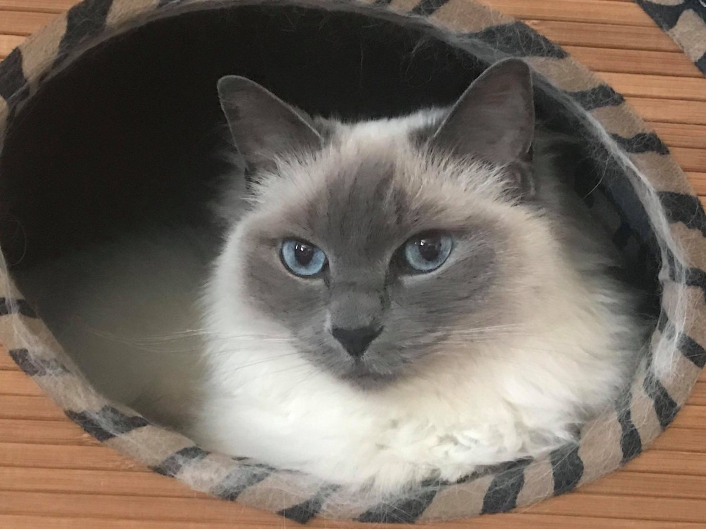
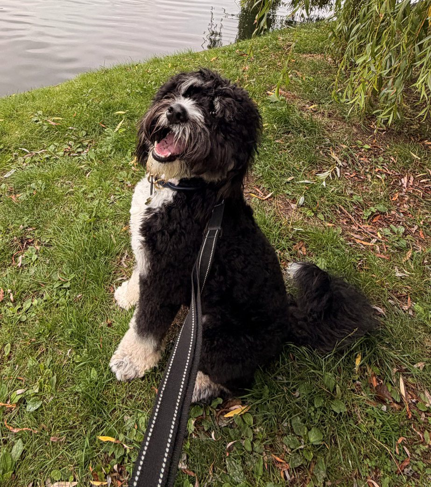
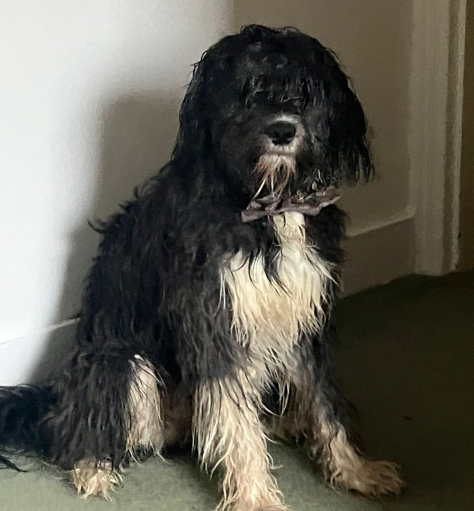
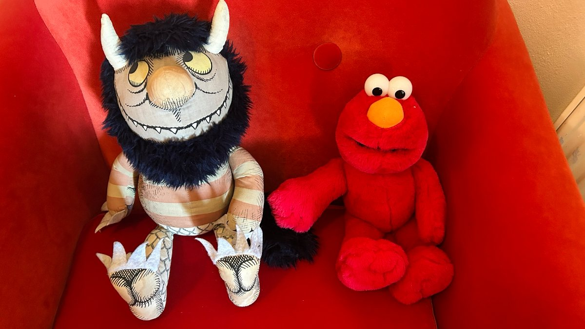
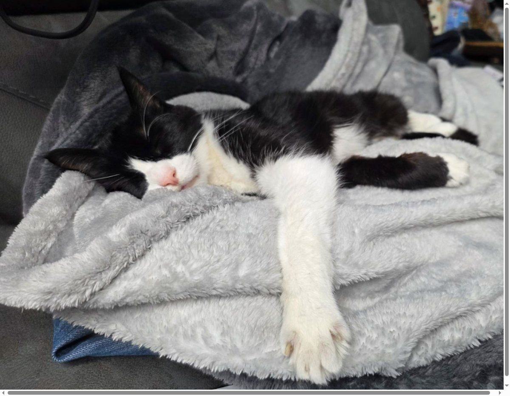

Lollycat,
former owner of Jo Minney

She was the sweetest kitty who ever was
OK so her real name was actually LOL - she was adopted, and before she joined our household she had a brother named ROFL who thought he was a dog.
She ran our household and every morning we had to let her outside so she could inspect the backyard and drink her own body weight in water from flowerpots until she literally made gurgling sounds if you picked her up. RIP sweet baby.
Archie,
superhero of Michelle Frost

Not all heroes wear capes
Although, I'm sure you'll agree that Archie would look very dashing in a cape. If you run into Michelle at a conference you might even get to meet him!
Archie is a trained service dog, and makes sure that Michelle stays safe if she experiences an epileptic seizure.
Fia, ridiculous toy of Anders Noras
Surely this level of adorable can't be real
Friends assure me that this is not in fact a stuffed toy. I'm still on the fence, but she clearly meets the criteria for being an excellent floof.
One might argue that she has enough hair for both of them...
Treacle,
partner in crime of Emmz Rendle

This dog has seen some things
Have you ever woken up not knowing where you are and you can't remember the last 24 hours and you have a stamp on your wrist that says 'not today Satan' and you inexplicably smell like popcorn and bad choices?
Treacle has.
Wild Thing & Elmo,
support animals of Luise Freese

I don't think those count as pets
I included them anyway for the LOLs but this is what Luise sent through when I asked in the group chat for pet photos. Although admittedly these two do seem much less likely to set your house on fire or get arrested for selling drugs than Treacle.
Buddha,
owner of Martin Thwaites

Lavish me with attention, human
Do you ever look at a cat and just think - I wish that was me? She looks so relaxed. I bet she's never woken up having inexplicably sprained an ankle in her sleep...